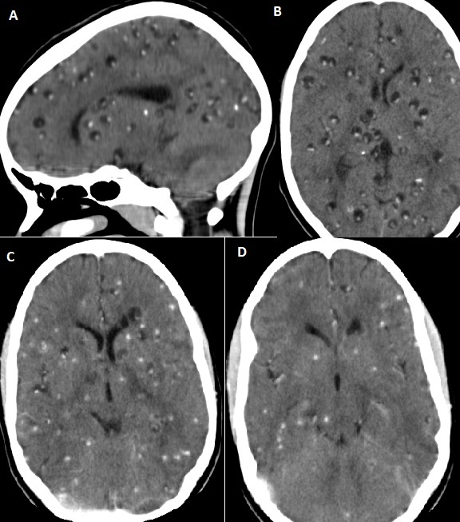

Pergunta central · Pág. 03 de 20
Epilepsia em três vias — e o que uma crise única não prova
Uma crise única faz epiléptico?
A resposta é “depende” — e o depende tem endereço. A definição operacional de epilepsia não é um critério só; são três portas oficiais, e a crise única entra por uma delas apenas quando vem acompanhada de risco alto ou de síndrome.
Tabelão âncora · as três vias da definição
| Via | Critério | Exemplo / observação |
|---|---|---|
| Via 1 · tempo | ≥2 crises não provocadas com intervalo >24 h [016] | Crises no mesmo dia contam como um evento para este critério. |
| Via 2 · risco | 1 crise não provocada + risco de recorrência >60% [019] ou lesão epileptogênica | Cicatriz de neurocisticercose, AVC antigo de alto risco. |
| Via 3 · síndrome | Encaixe em síndrome epiléptica | Padrão clínico + EEG + epidemiologia — quase sempre implica >1 crise. |
Via 1: ≥2 não provocadas >24 h
Definição operacional central: ao menos 2 crises epilépticas não provocadas, com intervalo acima de 24 horas entre elas. VFP [016]: o critério temporal é >24 h. Crises no mesmo dia contam como um evento para esse critério — não some a porta, mas a contagem muda.
Via 2: 1 crise + risco >60% / lesão
Uma crise única não necessariamente define epilepsia. O segundo caminho: 1 crise não provocada com chance de recorrência >60%. Como estimar: a investigação encontra lesão cerebral compatível com a crise → foco epileptogênico demarcado.
Caixa-nuance · [019] A voz desta fonte usa >60%; a ILAE formaliza ≥60% (“at least 60%”) no risco de recorrência em 10 anos após duas não provocadas. Em prova e na prática, o limiar ensinado é o 60% — lesão estrutural epileptogênica (cicatriz, NCC, AVC antigo de alto risco). O canon da página é o >60% da fonte; a nuance do “≥” fica aqui, sem “corrigir” o discurso.
Neurocisticercose como modelo
Exemplo vivo da Via 2: pós-TCG na emergência + cicatriz de neurocisticercose (calcificações parenquimatosas) → crise única tratada como epilepsia pela iminência de recorrência. A manifestação clássica de NCC em prova e na clínica é crise.

Até 10% e a crise única sem etiologia
Crise única sem etiologia após investigação completa → não epiléptico por esse critério. VFP [024]: estima-se que até 10% da população mundial pode ter uma crise epiléptica na vida e nunca mais, sem etiologia descoberta.
Via 3: síndrome epiléptica
O terceiro caminho: encaixe em síndrome epiléptica (sinais/sintomas + crise característica + perfil epidemiológico + EEG + manifestações associadas). Na prática, síndrome quase sempre implica mais de uma crise — o que reforça os critérios anteriores.
Regra de ouro âncora
Epilepsia = 2 não provocadas >24 h · ou 1 + risco >60%/lesão · ou síndrome.
Por que importa
É o critério que separa “teve crise” de “é epiléptico” — e a banca adora punir quem abre ou fecha a porta errada.
Resumo operacional
Epilepsia = 2 >24 h · ou 1 + >60%/lesão · ou síndrome. Crise única sem etiologia não fecha.
Quiz
Conexão
A palavra “provocada” decide se o evento entra ou não nessas vias — é ela que separa a crise aguda da porta da epilepsia.